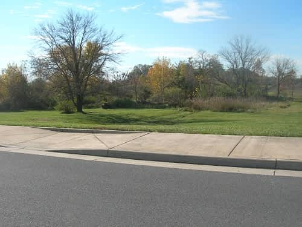

South of Stephens Run Street
The site of Peter Stephen’s original house, built in the 1730s, had been lost for many years. Samuel Kercheval, one of the town’s more famous authors, wrote in 1833 that the ruins of this first cabin were still visible at that time. By 1906 Inez Virginia Steele, another resident author, wrote, “all traces of it are now obliterated.” She also stated that this log house “stood on the west side of the road [U.S. Route 11] about 50 yards or more north of Stephens Run.” During the years of 2003 through 2005, anticipating the construction of a new housing development, members of the local chapter of the Archeological Society of Virginia began to perform a salvage operation around this original cabin site. During this salvage effort artifacts and building foundations were discovered at this place.